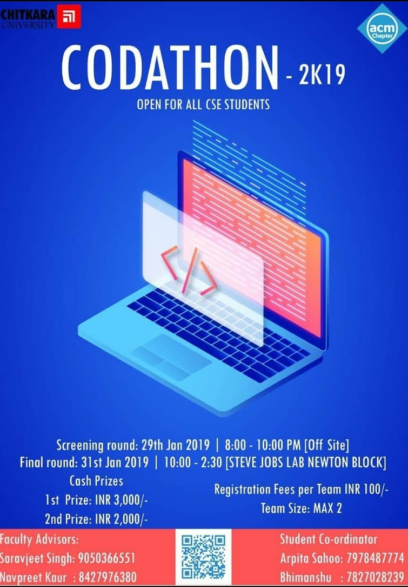
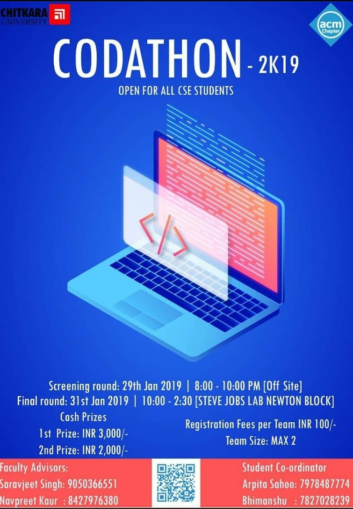
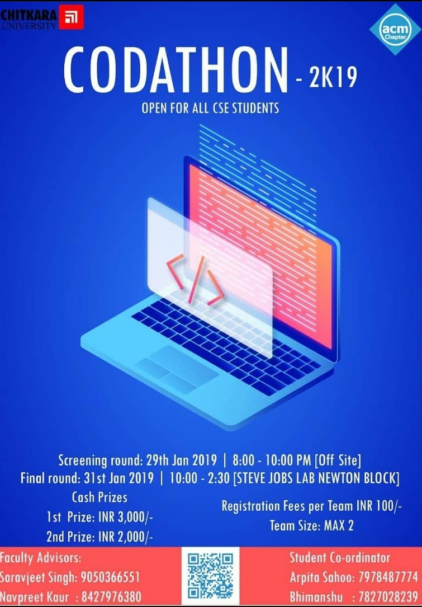
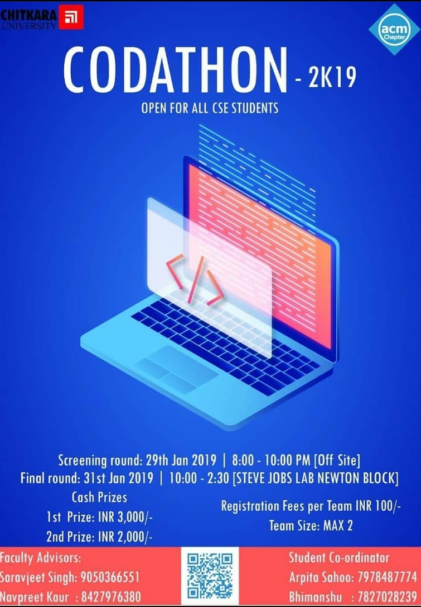

2019


 



Association for Computing Machinery
Chitkara University
Chitkara ACM student chapter, Department of computer science and engineering organized a well
developed expert talk on of the most intriguing topic “Data Science” on 15th October 2019. It
was an interactive session delivered by Er Karan Arora, founder and CEO of ‘Itronix Solutions’.
It was a well flourished healthy session where students showed their keen interest in the chief
field of Data Science, learned various aspects of this emerging specialization. 70 students
participated in this event.
This workshop was appreciated by all the students as they were able to enhance technical skills.
The talk also motivated the students and explained that these kind of workshops are beneficial
for their upcoming placements and technical knowledge.The event was a smashing success and
showcased the combined efforts of the ACM family and gained many positive feedback
CHITKARA ACM STUDENT CHAPTER organized a two days workshop on one of the flourishing backend
development tools ‘NODE JS’ on 10th and 11th October 2019 at Chitkara University, Punjab. Node.
JS is a JS runtime environment which allows the infrastructure to build and run an application
in a light, scalable, and cross-platform way.
Approximately 50 students registered for this workshop. Firstly, they were excited to learn a
new backend development tool but their interest grew progressively as both the speakers started
connecting working of this technical backend tool with real life examples. After that,
participants showed persistent enthusiasm throughout the workshop.
In the end, certificates were provided to participants.This workshop was surely a success due to
mutual coordination of everyone presented there.
Web development is a key specialization in IT sector. Not only it’s interesting but also serves
as a major field in technology.
So in order to develop a pre requisite knowledge for the upcoming developers, Chitkara
University ACM student chapter took the initiative of organizing a 2 day workshop on React js.
React js is an open source JavaScript library for building user interface. It can be used as a
base in the development of single page or mobile applications. So our society organized a 2 day
workshop where the experts from ‘Erginous solutions’ shared their experience and expertise with
the participants and helped them explore and build a fully functional project on full stack
JavaScript with react js. 73 students participated in the event. The event showcased the
combined efforts of the ACM family.
ACM Student Chapter, Department of Computer Science and Engineering, Chitkara University
organised a web development based contest, Web-O-Mania to provide a platform for all the
frontend fanatics, to compete with each other and showcase their skills, along with a chance to
win Exciting prizes worth Rs 5000.The participants were provided with a theme, on site on which
they had to build their website. Participants had the flexibility to choose the language and
modules that suits them best. The organisers then shortlisted the teams, based on the
evaluation.
After that the final evaluation was conducted and the winners were announced. Cash prizes, along
with certificates and gift cards were awarded to the winners. Total 56 teams participated in the
event. The competition concluded on a happy note with a group photo.
"You don’t have to be great to start, but you have to start to be great"
ACM Student Chapter organized a 2 weeks workshop on Android with Machine Learning to provide an
opportunity to all the budding android enthusiasts to witness an in-depth knowledge of Android
and take their skills to a whole new level. The instructors for the workshop were the co-founder
of LearnCodeOnline, Mr. Saksham Choudhary, who is one of the world’s renowned cybersecurity
Researcher, along with Mr. Nitesh Kumar, who is the senior-developer in LearnCodeOnline. The
workshop instilled a belief in learning by doing, as the students were made to develop many
mobile applications,which were facilitated by Mr.Nitesh, who helped students to understand the
code and concepts in a much better way. The applications that were developed involved Text
Recognition, Todo app, Calculator, Image Recognition, Weather app, and many other beguiling
apps.
Prizes were also distributed to students who developed the maximum number of apps.All the
participants were handed over the certificates, along with cool stickers and the workshop
concluded on a happy note with a group photo.
ACM Student Chapter, Department of Computer Science and Engineering organized an Expert talk on Big Data and Hadoop presented by Mr. Sarbjot Singh (Technical Lead, Big data and Hadoop, Trantor Software Ltd) on 27/3/2019. Many students participated in the talk and learnt about data center, data nodes and data storage techniques. Students were found very interactive with the speaker. They got great knowledge in the field of Big Data and Hadoop architecture. They were acknowledged about what exactly is Big Data, how is it making an impact on our lives and why organizations are hunting for professionals with Big Data skills. The overall outcome of the event was excellent. And the event was concluded on a happy note with a group photograph.
ACM Student Chapter, Department of Computer Science and Engineering organized a 2 days (19 – 20- Feb 2019) Hackon workshop on Ethical Hacking and Information Security. Total of 75 students attended the workshop. Mr. Saksham Choudhary a renowned information security researcher and ethical hacker was the resource person of the workshops. Mr. Saksham is co-founder of learncodeonline.in andinstructor of many udemy courses.During the workshop, Mr. Choudhary covered some important topics like BurpSuite, webcamhacking, data penetration, MAC modification, vulnerabilities in live websites etc. Student gained hands on experience in the field of the information security. All the students really appreciated the contents that were discussed, they realized that interactions likes these can help them improve their learning. Students showed keen interest in attending more advanced workshops like this in future.
ACM Student Chapter, Department of Computer Science and Engineering organized CODATHON2K19 a coding competition for the students. The completion consisted of two rounds, screening round was on 29/01/2019 which was an off-site round, the final round was on 31/01/2019. Total 180 students registered for the screening round. Over 180 registered students for the screening round, top 60 students went on for the final round.For the screening round, the teams were given 3 problems to code and while in the final round they were given six real-life coding problem to code in C or C++ languages. The first position for the event was bagged by Yatin Sindi and Arpit Sharma of CSE 3rd Year and the second position was claimed by Ananay Bakshi & Avnish Dewan of CSE 2nd Year.The winners got a cash prize of 3000/- and 2000/- respectively along with trophies and certificates. All the participants who were selected for the final round were given certificates as an appreciation.